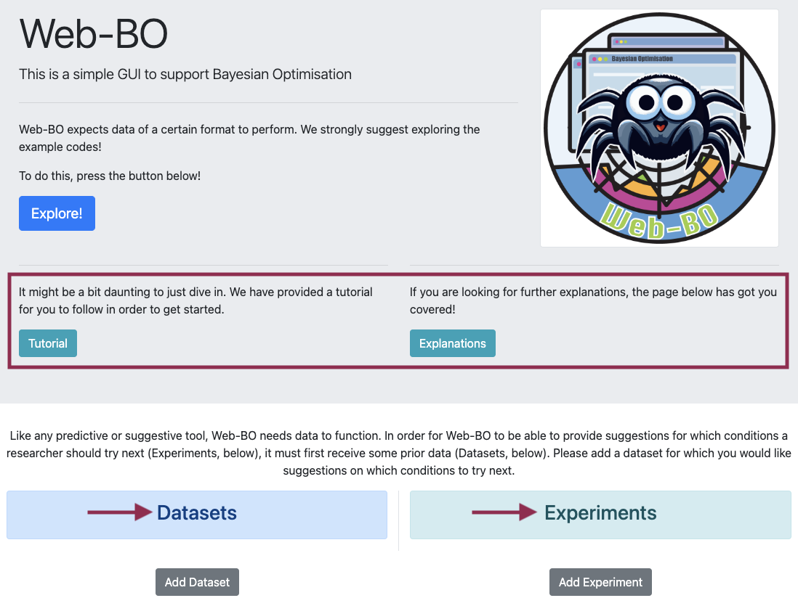

Developing Web-MOBO for chemical formulation
Leading continued development of a Python-based multi-objective Bayesian optimisation platform, with ownership across model logic, interface and backend development, debugging, validation and documentation.
- 12 optimisation iterations in the controlled virtual benchmark
- Applied to conductive pastes, AgNW films, silver inks and debond-on-demand adhesives
- Bridged Chinese–English technical discussions across local and overseas teams
